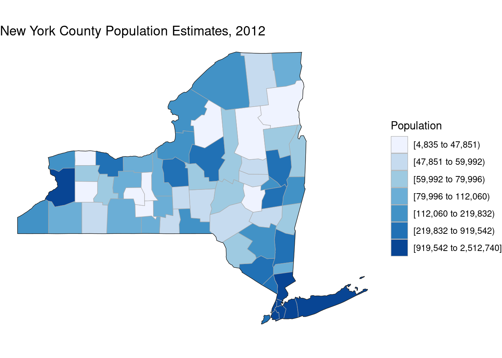

My Final Project Template
Predictability of Harmful Algal Bloom Prevalance in NYS
Madalyn Benson
Introduction
An algal bloom is the overgrowth of algae in water sources. Algal blooms occur when exposed to the correct environmental conditions (i.e. excess nutrients, warm temperatures, ample sunlight, and low-flow water conditions). A bloom can be short-lived (a couple of hours) or long-lived (a couple of weeks) depending on how long the algae persist in the environment. Harmful algal blooms (HABs) can be harmful to humans and the environment. When this occurs the algal species can produce toxins with serious health impacts to humans, degrade aquatic ecosystems, and also affect the economy near coastal areas. The dominant algae in New York State include but are not limited to: Green algae (Chlorophyta) Golden brown algae (Chrysophyta), which also includes a large group of diatoms Blue-green algae (Cyanobacteria) Several smaller groups including (euglenoids, cryptomonads, and dinoflagellates)
The presence of the above harmful algal blooms varies both spatially and temporally in NYS, which results in varying risk for people, animals, and the local ecology. HABs are most prevalent in the months June through October, however they can occur at any time of year. HABs reduce tourism, close beaches, and greatly diminish local economies. Because of this unpredictability, harmful algal blooms are of national concern. Data suggests that certain environmental conditions can be used as a tool to better understand and predict HABs. This project aims to explore any trends between harmful algal blooms prevalence within New York State by relating HAB prevalence over time to environmental conditions and populations.
Materials and methods
Example 1

Water Quality Assessment of New York State
Image 1 is the extracted raster data of the New York State water quality report from the New York State Department of Environmental Conservation (DEC). I selected this image as an example because I will be needing a raster data image of New York for my project. This is a useful resource because it shows the water bodies in NYS. In my final project I will be showing where and when harmful algal blooms affect the water bodies of New York. https://www.dec.ny.gov/chemical/66532.html
Example 2

Climate Data Grapher
Image 2 is an interactive map of annual maximum temperatures in New York State from the New York Climate Change Science Clearinghouse (NYCCSC). This is a valuable data source because the user can select data from New York State stations from gridded observations, spatially aggregated by New York counties and river basins, or by states neighboring New York. Different time periods can be observed to see temperature changes over time. https://www.nyclimatescience.org/highlights/data_products
Example 3

Freqeuncy of HAB Events
Image 3 is a figure displaying the occurrence of HAB events over time. This is a useful graphic because it is showing a sharp increase in algal blooms over 100 years. I would like to create a chart similar to this inorder to provide reasoning for an increase in algal blooms across NYS. I would do this by comparing other correlating data trends to support an increase in algal blooms. https://www.researchgate.net/figure/Frequency-of-occurrence-of-harmful-algal-blooms-during-the-last-century_fig4_236142114
Proposed data sources
Water quality data https://www.dec.ny.gov/chemical/31290.html To get water quality data for NYS, I plan on using the NYS Section 303(d) list of impaired/TMDL waters. Every two years, the Federal Clean Water Act and supporting federal regulations require states to submit a list of impaired waters that require the development of a Total Maximum Daily Load (TMDL). I will be using the 2020-2022 Clean Water Act (CWA) data set.
Spatial polygon data of NYS Counties http://gis.ny.gov/gisdata/metadata/nysgis.Counties_Shoreline.pdf To get polygon data for NYS, I plan on using the NYS Civil Boundaries County Shoreline data from NYS GIS Clearinghouse. This dataset has accurate polygon edges for the edge of NYS counties. This is essential because these polygons will be used to extract data from the NLCD dataset, which has accurate data on the shorelines of state and county polygons.
Spatial polygon data of algal blooms https://www.dec.ny.gov/chemical/83332.html In order to track the HABs in NYS, I will be using the DEC 2012-2019 HABs archive summary to summarize all water bodies with harmful algal blooms documented. This will show algal bloom trends in NYS over time.
Spatial data showing NYS temperatures over time https://www.nyclimatescience.org/highlights/data_products I will be using the interactive map of annual maximum temperatures in New York State from the New York Climate Change Science Clearinghouse (NYCCSC) to select data from New York State stations and observe temperature trends over time. I could also use NOAA temperatures at varying weather stations across NYS.
Annual Population Estimates for New York State and Counties: Beginning 1970 https://data.ny.gov/Government-Finance/Annual-Population-Estimates-for-New-York-State-and/krt9-ym2k/data I will be using this data to correlate a relationship between population density and HAB prevalence.
Proposed methods
I will use the raster or read_sf package to download spatial polygon data for NYS counties. I will use the merge function to join all data and the tmap package to create the choropleth maps. To create an interactive map to display the data listed above, I will use the leaflet package.
creating a choropleth map for: average populations at county level across NYS
creating a time-series graph of temperature trends over time for NYS counties
creating interactive maps that display the following when a country is clicked on: county, year, and type of algal bloom
Expected results
Overall, I believe this project will be a successful attempt at monitoring the predictability of harmful algal bloom prevalence in NYS. Based on my expectations of this outline, relevant data will be projected in an effective way to show statistically relevant correlations.
Materials and Methods
Create a choroplethr map of average populations at county level across NYS
library(choroplethr)## Loading required package: acs## Loading required package: stringr## Loading required package: XML##
## Attaching package: 'acs'## The following object is masked from 'package:base':
##
## applylibrary(choroplethrMaps)
library(janitor)##
## Attaching package: 'janitor'## The following objects are masked from 'package:stats':
##
## chisq.test, fisher.test#default parameters
data(df_pop_county)
#zoom into new york state with additional reference map
county_choropleth(df_pop_county,
title = "New York County Population Estimates, 2012",
legend = "Population",
state_zoom = "new york")
Create a time-series graph of temperature trends over time for weather stations across NYS
library(tidyverse)## ── Attaching packages ─────────────────────────────────────── tidyverse 1.3.2 ──
## ✔ ggplot2 3.4.0 ✔ purrr 0.3.5
## ✔ tibble 3.1.8 ✔ dplyr 1.0.10
## ✔ tidyr 1.2.1 ✔ forcats 0.5.2
## ✔ readr 2.1.3
## ── Conflicts ────────────────────────────────────────── tidyverse_conflicts() ──
## ✖ dplyr::combine() masks acs::combine()
## ✖ dplyr::filter() masks stats::filter()
## ✖ dplyr::lag() masks stats::lag()library(dplyr)
library(p8105.datasets)
library(patchwork)
library(ggridges)
knitr::opts_chunk$set(
fig.width = 6,
fig.asp = .6,
out.width = "90%"
)
theme_set(theme_minimal() + theme(legend.position = "bottom"))
options(
ggplot2.continuous.colour = "viridis",
ggplot2.continuous.fill = "viridis"
)
scale_colour_discrete = scale_colour_viridis_d
scale_fill_discrete = scale_fill_viridis_d
data(ny_noaa)
head(ny_noaa, 10)## # A tibble: 10 × 7
## id date prcp snow snwd tmax tmin
## <chr> <date> <int> <int> <int> <chr> <chr>
## 1 US1NYAB0001 2007-11-01 NA NA NA <NA> <NA>
## 2 US1NYAB0001 2007-11-02 NA NA NA <NA> <NA>
## 3 US1NYAB0001 2007-11-03 NA NA NA <NA> <NA>
## 4 US1NYAB0001 2007-11-04 NA NA NA <NA> <NA>
## 5 US1NYAB0001 2007-11-05 NA NA NA <NA> <NA>
## 6 US1NYAB0001 2007-11-06 NA NA NA <NA> <NA>
## 7 US1NYAB0001 2007-11-07 NA NA NA <NA> <NA>
## 8 US1NYAB0001 2007-11-08 NA NA NA <NA> <NA>
## 9 US1NYAB0001 2007-11-09 NA NA NA <NA> <NA>
## 10 US1NYAB0001 2007-11-10 NA NA NA <NA> <NA>ny_noaa_structure = print(str(ny_noaa))## tibble [2,595,176 × 7] (S3: tbl_df/tbl/data.frame)
## $ id : chr [1:2595176] "US1NYAB0001" "US1NYAB0001" "US1NYAB0001" "US1NYAB0001" ...
## $ date: Date[1:2595176], format: "2007-11-01" "2007-11-02" ...
## $ prcp: int [1:2595176] NA NA NA NA NA NA NA NA NA NA ...
## $ snow: int [1:2595176] NA NA NA NA NA NA NA NA NA NA ...
## $ snwd: int [1:2595176] NA NA NA NA NA NA NA NA NA NA ...
## $ tmax: chr [1:2595176] NA NA NA NA ...
## $ tmin: chr [1:2595176] NA NA NA NA ...
## - attr(*, "spec")=
## .. cols(
## .. id = col_character(),
## .. date = col_date(format = ""),
## .. prcp = col_integer(),
## .. snow = col_integer(),
## .. snwd = col_integer(),
## .. tmax = col_character(),
## .. tmin = col_character()
## .. )
## NULLny_noaa_tidy =
ny_noaa %>%
janitor::clean_names() %>%
separate(date, into = c("Year", "Month", "Day")) %>%
mutate(tmax = as.numeric(tmax), tmin = as.numeric(tmin), Year = as.numeric(Year), Month = as.numeric(Month), Day = as.numeric(Day)) %>%
mutate(Month = month.name[Month]) %>%
mutate(tmax = tmax/10,
tmin = tmin/10,
prcp = prcp/10)
ny_noaa_summary =
ny_noaa_tidy %>%
filter(Month %in% c("January", "July")) %>%
group_by(id, Year, Month) %>%
summarize(mean_tmax = mean(tmax), na.rm = TRUE)## `summarise()` has grouped output by 'id', 'Year'. You can override using the
## `.groups` argument.ggplot(ny_noaa_summary, aes(x = Year, y = mean_tmax, group = Year, color = Month)) +
geom_boxplot() +
facet_grid(. ~ Month) +
theme(legend.position = "none") +
labs(title = "Average Maximum Temperature for New York State Weather Stations",y = "Average Maximum Temperature (C)")## Warning: Removed 7058 rows containing non-finite values (`stat_boxplot()`).Create an interactive map displaying county, year, and type of algal bloom when a waterbody is clicked on
library(ggplot2)
library(maps)##
## Attaching package: 'maps'## The following object is masked from 'package:purrr':
##
## maplibrary(leaflet)
library(tidyverse)
library(RColorBrewer)
library(dplyr)
library(tmap)
noaa_df = readr::read_csv("data/Harmful_Algal_Bloom_Statewide_Occurrence_Summary__2012-2018.csv")## Rows: 880 Columns: 12## ── Column specification ────────────────────────────────────────────────────────
## Delimiter: ","
## chr (6): Waterbody Name, County, Bloom Type, Date of First Listing, Date of ...
## dbl (6): DEC Region, Year, Number of Weeks on DEC Notification List, Number ...
##
## ℹ Use `spec()` to retrieve the full column specification for this data.
## ℹ Specify the column types or set `show_col_types = FALSE` to quiet this message.str(noaa_df)## spc_tbl_ [880 × 12] (S3: spec_tbl_df/tbl_df/tbl/data.frame)
## $ Waterbody Name : chr [1:880] "Agawam Lake" "Agawam Lake" "Agawam Lake" "Agawam Lake" ...
## $ County : chr [1:880] "Suffolk" "Suffolk" "Suffolk" "Suffolk" ...
## $ DEC Region : num [1:880] 1 1 1 1 1 1 4 4 9 9 ...
## $ Year : num [1:880] 2018 2017 2016 2015 2014 ...
## $ Bloom Type : chr [1:880] "HT" "HT" "HT" "HT" ...
## $ Date of First Listing : chr [1:880] "05/25/2018" "05/26/2017" "06/10/2016" "05/22/2015" ...
## $ Date of Last Listing : chr [1:880] "10/26/2018" "10/27/2017" "11/04/2016" "10/30/2015" ...
## $ Number of Weeks on DEC Notification List: num [1:880] 22 22 21 23 21 14 1 5 1 15 ...
## $ Number of Weeks with Updates : num [1:880] 22 22 21 16 20 8 1 2 1 11 ...
## $ Latitude : num [1:880] 40.9 40.9 40.9 40.9 40.9 ...
## $ Longitude : num [1:880] -72.4 -72.4 -72.4 -72.4 -72.4 ...
## $ Location 1 : chr [1:880] "(40.8744011, -72.3921967)" "(40.8744011, -72.3921967)" "(40.8744011, -72.3921967)" "(40.8744011, -72.3921967)" ...
## - attr(*, "spec")=
## .. cols(
## .. `Waterbody Name` = col_character(),
## .. County = col_character(),
## .. `DEC Region` = col_double(),
## .. Year = col_double(),
## .. `Bloom Type` = col_character(),
## .. `Date of First Listing` = col_character(),
## .. `Date of Last Listing` = col_character(),
## .. `Number of Weeks on DEC Notification List` = col_double(),
## .. `Number of Weeks with Updates` = col_double(),
## .. Latitude = col_double(),
## .. Longitude = col_double(),
## .. `Location 1` = col_character()
## .. )
## - attr(*, "problems")=<externalptr>m <- leaflet(noaa_df, options = leafletOptions(minZoom = 6, dragging = TRUE)) %>%
setView(lat = 43, lng = -75, zoom = 6) %>%
setMaxBounds(lng1 = -70,
lat1 = 40,
lng2 = -80,
lat2 = 45) %>%
addTiles() %>%
addMarkers(data = noaa_df,
popup= ~paste(`Waterbody Name`, "<br>County:",`County`, "<br>Bloom Type:", `Bloom Type`,"<br>Coordinates:", `Location 1`))## Assuming "Longitude" and "Latitude" are longitude and latitude, respectivelym # Print the mapResults and Conclusions
Algal blooms occur when exposed to the correct environmental conditions (i.e. excess nutrients, warm temperatures, ample sunlight, and low-flow water conditions). The maps and other graphics created above are carefully planned to convey the results of harmful algal blooms increasing over time in New York State. A map of New York State counties is provided as a reference map to refer back to in regards to populations. As shown on the map, the darker counties have larger populations. Downstate counties towards New York City and Long Island have some of the highest populations per county. This corresponds with the leaflet map because there are higher amounts of algal bloom occurrences in these higher populated counties. Higher populated areas tend to have more impaired water bodies and can be a great source nutrients for algae to grow.
The average maximum temperatures for New York State weather stations was not the results I expected. From 1980-2010 the maximum temperatures did not fluctuate too much. I was predicting there to be a higher increase in temperature maximums due to global warming and an increased amount of algal blooms. Higher temperatures typically lead to more algae blooms. Further investigation to include more recent weather station data could possibly change the data to have more expected results.
References
American Community Survey 5-Year Data (2009-2021). (2022, December 9). Census Bureau. Retrieved December 16, 2022, from https://www.census.gov/data/developers/data-sets/acs-5year.html
Datasets | Climate Data Online (CDO) | National Climatic Data Center (NCDC). (n.d.). National Centers for Environmental Information. Retrieved December 16, 2022, from https://www.ncdc.noaa.gov/cdo-web/datasets
Harmful Algal Blooms (HABs) - NYS Dept. of Environmental Conservation. (n.d.). New York State Department of Environmental Conservation. Retrieved December 16, 2022, from https://www.dec.ny.gov/chemical/77118.html